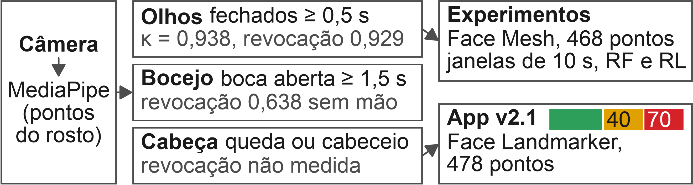
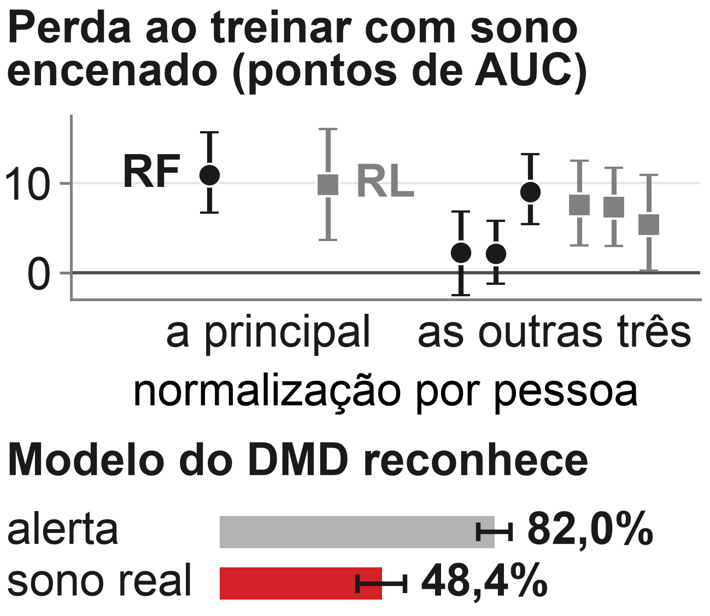

Detecção de Sonolência em Dispositivos
Móveis: Avaliação da Generalização
entre Sonolência Atuada e Real
Código e app: github.com/BrunoRodolfoo/deteccao-sonolencia
André Luís O. F. da Silva
Bruno Rodolfo da Silveira
Bruno Sandoval Ribeiro
Paulo Henrique Perin
Orientador:
Prof. Júlio César Nievola
Contexto e Pergunta
Condições de saúde do condutor,
sono incluído, pesam em 27,8%
das ocorrências nas rodovias
federais [7].
Com sono encenado (atuado), os
detectores passam de 90% de
acurácia [6]. Com sono real
(UTA-RLDD), o modelo dos
autores da base acerta 65,2% dos
vídeos, e pessoas, 57,8% [1].
Pergunta central
Um detector treinado com sono
encenado reconhece sono real de
pessoas nunca vistas, no celular?
Perguntas de pesquisa
PP1. Quanto se perde do sono
encenado para o real?
PP2. Qual o custo no celular?
PP3. Resiste à noite, ao
movimento e aos óculos?
Método e Resultados

UTA-RLDD [1]
sono real, 60 pessoas
teste (PP1)
DMD [2]
encenado, 13 pessoas
treino (PP1)
NITYMED [3]
noite, carro andando
noite (PP3)
MRL + CEW [4, 5]
recortes de olho
olho e óculos (PP3)

Vazamento
Nas sequências de piscadas,
que se sobrepõem, partir por
janela infla a acurácia em
45,3 pp; nas janelas de 10 s,
12,6 pp no RF e 1,2 pp na RL.
App v2.1
Em 24 pessoas com sono real,
sentadas e fora do ajuste,
separou sonolento de acordado
(AUC 0,812); alarmou 15
sonolentos e 2 acordados.
Conclusões
Treinado com sono
encenado, o modelo só
reconhece 48,4% das
janelas de sono real, com
fechamentos mais curtos.
PP1. A RL do DMD perde de 5,4 a
9,8 pontos de AUC em todas as
normalizações testadas; o RF
perde 10,9 só com a referência
principal na UTA.
PP2. No iPhone 17 Pro, 11 a
23 ms por quadro (app 1.0).
PP3. A SNR do EAR (abertura do
olho) é 7,2 à noite, 8,7 com o carro
andando e 13,6 parado, de dia.
Óculos: AUC do olho de
93,4 para 65,1.
Limitações. Um só par de bases.
[1] Ghoddoosian et al., CVPRW 2019.
[2] Ortega et al., ECCVW 2020. [3] Petrellis
et al., DataPort 2022; DSD 2021. [4] Fusek,
ISVC 2018. [5] Song et al., Pattern
Recognit. 2014. [6] Lyu et al., arXiv 2018.
[7] ABRAMET/PRF, Agência Brasil 2026.